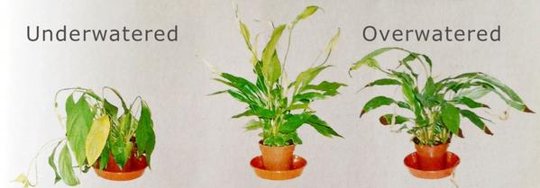

Practices and Guides
Here I will explain some common practices and tips of horticulture such as exposure, essentials, and care.
Core Plant Fundamentals
Light
Direct Sunlight: (🌞)
Plants that require direct sunlight thrive off of the suns rays. Since they require least 6+ hours of sunlight its better grown outdoors where it can sit under the sun! Lack of sun make result in: slow growth, pale color, drooping, and failure to bloom! Its also worthy to note that on extremely hot days some full sun plants may not be able to handle the heatPartial Sun / Partial Shade: (⛅)
Plants in this catagory like the sun but dont want to be under it for the whole day, they enjoy about 3-6 hours of sunlight. Best placed under an awning, deck, or window sill. These plants can also thrive under filtered light such as light through curtains, shade cloths, and under trees! Full Shade: (☁)
Plants in this catagory arent fond of the sun and prefer at most 3 hours of sunight. These plants are mostly catagorized as indoor plants for this reason.
Water
Every plant requires different levels of water. Some may require daily watering, a cup of water, or no water at all. Aside from how much water it needs its also important to note when you are overwatering vs. underwatering.

Image Credit: GrowUp Blog
Overwatering
While this may be difficult to tell some common signs of this are: yellowing, foul smell, mushy stems, drooping, and possibly root rot. If your plant is overwatered, its imporant to check its drainage and let the water drain out.Underwatering
Depending on your plant, the most common signs of underwatering are: brown or crisping leaves, dry crumbling soil, and heavily drooping or wilting leaves.Soil
The last fundamental element is soil, the key for a healthy and lively plant! Soil contains all the neutrients and minerals a plant needs to grow and to stabalize its self with. Depending on your plant its recommended to buy the appropriate soil mix as some plants like fruits enjoy more acidic dirt and giving your plant its recommended dirt can boost its results.
This is also where composting and making your own fertilizer can come in! And no, if done correctly, it shouldnt create a foul oder. Just remember, natural food wastes can be mixed in, such as corn husks, food scraps, coffee grounds, tea leaves, egg shells, etc. Do not throw in bones or meat! Once everything is thrown in, simply cover with dirt and leave it be! (Worms may appear to speed up the process)
Care Practices
Pruning
The removal of yellowing, damaged, or dead leaves so that the plant spends more energy on growing fresh and healthy leaves. Without removing them a plant may spend more resources attempting to save or recover its dying leaf.
Additionally you can shape the way your plant grows through trimming, for example if you trim at a leaf node, you promote a more bushier and fuller growth. Just dont over do it, a plant still needs leaves to grow!
Repotting
If a plant has outgrown its container its ready to be repotted, when repotting use a pot thats only slightly larger, loosening its roots also helps!
Pests
Pests tend to be area and plant specific, but thanks to tech advancements, simply take a photo of the pest and preform an image search to find out what is infesting your plant! For common houseplant pests, simple solutions exist such as soap and water rinses.